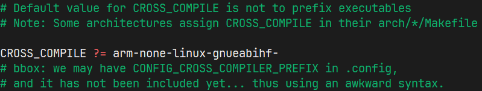
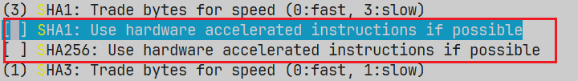
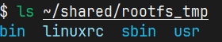
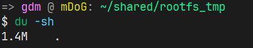
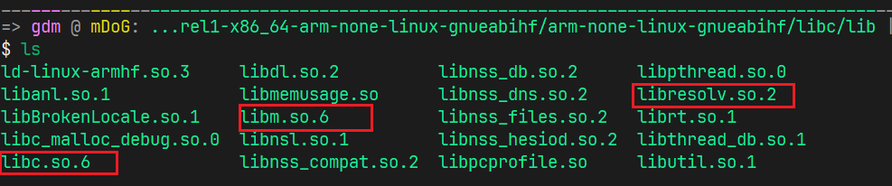
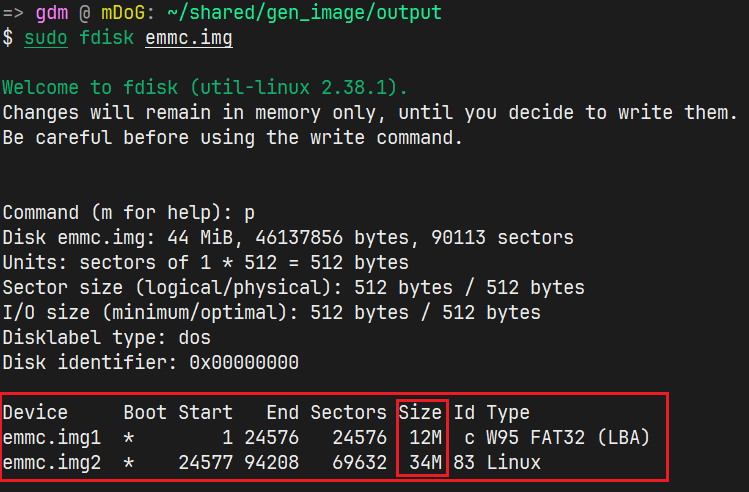

版权信息
warning
本文章为博主原创文章。遵循 CC 4.0 BY-SA 版权协议，转载请附上原文出处链接和本声明。
1. 前言
1.1. 最小根文件系统
一个最精简的文件系统包含什么呢？
我们知道，内核挂载根文件系统后，第一件事是就是启动 /sbin 目录下的 init 程序作为第一个进程，init 程序读取 /etc 目录下的配置文件，再根据配置文件启动其他 app。同时这些app又有可能是动态链接的，所以我们还需要 /lib 文件夹，包含一些头文件。
此外，bootloader 也会在根文件系统启动内核，内核需要在根文件系统中读取设备树文件以控制硬件，这有了 /boot 文件夹。
有了设备树，自然少不了 /dev 目录。最小的/dev目录，只要包含 console 与 null。
综上，我们可以总结出一个最小的根文件系统有什么：
- init 程序
- 其他的必要app
- 配置文件
- lib库（用于动态链接）
- 内核zImage
- dtb设备树文件
- /dev
1点属于/sbin，2点属于/bin ，3点属于/etc，4点属于/lib，5、6点属于/boot。
如果更极致的话，甚至可以使用静态链接，静态编译应用程序，这样就不用 /lib ，也不使用其他app，就一个init程序实现想要的功能即可——当然这是理想化的。
1.2. 关于 systemV 和 systemd
我们上面所说的 init 其实说的就是 system V 的启动方式——串行启动，一个脚本执行完再启动下一个。与 system V 相比，systemd 更加现代化且更好——并行启动，通过依赖关系图同时启动多个服务、启动速度快、依赖关系明确等等…
但是，在嵌入式linux坏境中却并不一定好用，因为它太重了，依赖也多。而且对于使用 systemd 的嵌入式系统来说，根文件系统也不应该用 busybox 来构建。busybox生成的 init 实际上就是类似于 system V 的 init 实现。
1.3. What is BusyBox？
BusyBox并不是一个根文件系统制作工具，它只是极大地简化了 /bin、/sbin 等目录的搭建。
BusyBox 是一个集成了上百个常用 UNIX 命令的小型可执行文件。
当你在 shell 中输入：ls
实际上调用：/bin/busybox ls
BusyBox 会根据你执行的命令名自动表现成对应工具的行为。
它的设计哲学是：
- 只实现最核心的功能；
- 去掉冗余；
- 用最小的代码体积覆盖最大功能。
从这里可以看出，它非常适合嵌入式系统。
2. 编译BusyBox
首先在makefile中指定交叉编译器，避免每次make都要传入编译器参数。

使用命令 make help 查看make选项。
2.1. 生成配置文件
我们先使用默认的配置文件。
使用命令 make menuconfig 或者 make defconfig 都可以。我们选择menuconfig，方便我们配置一些选项：
make menuconfig进入配置界面后，我们可以指定一下编译器前缀 ：
将 Settings → Build Options → Cross Compiler prefix 中指定为 arm-none-linux-gnueabihf-。
也可以启用 Build static binary (no shared libs) 以实现静态编译，不用使用动态共享库省去自己构建库文件的步骤，代价是根文件系统大小大一些。空间换时间（bushi
其他的根据自己需求修改（如果看得懂的话）。
同时最好关闭硬件加速项SHA，也就是这两项：

我使用的1.37.0版本 busybox，即使使用默认配置文件，什么也不做修改，也无法编译成功，会报错：“libbb/hash_md5_sha.c:1316:35: error: ‘sha1_process_block64_shaNI’ undeclared (first use in this function);”
查阅后发现可能是CPU不支持硬件加速的问题，所以就将 Settings 选项里的两个硬件加速选项关了。不知道是官方的bug还是什么…
2.2. 编译并安装BusyBox
编译没啥好说的，make 即可。
用 CONFIG_PREFIX 指定文件夹。将busybox 安装到指定文件夹，也就是拟用于构建根文件系统的那个文件夹嘛，前面我们也说了，busybox就相当于把 /sbin /bin 这两块拼图做好了。
安装实际上就是建立软链接，链接到 /bin/busybox 。所以一定要确定好路径，要是不小心指定到本机Linux的根目录下不就废了吗。😦
make CONFIG_PREFIX=~/shared/rootfs_tmp install

3. 完善根文件系统
目前根文件系统最基本的操作工具就有了，但是还缺少必要的文件夹，比如dev、sys等。
但是我们不必在这里创建这些文件夹。还记得之前提到的初始化脚本吗，内核启动并挂载根文件系统后，做的第一件事就是运行 /sbin/init 。而这个程序又在做什么呢，busybox的init程序大概做这三件事：
- 读取
/etc/inittab（如果有）； - 启动第一个初始化脚本
/etc/init.d/rcS； - 最后启动 shell。
inittab：init 程序的配置文件
/etc/init.d/rcS：run commands for system。一个普通的 shell 脚本，但它是由 init 启动的第一个脚本，负责初始化系统的环境。
因此我们可以在rcS脚本中添加这些必要文件。所以我们只需要在现在的根文件系统中添加以下几个文件：
mkdir etc/init.d/rcS
mkdir etc/inittab3.1. rcS 的编写
大致内容如下，已附详细注释及常见问题：
#!/bin/sh
# rcS - minimal BusyBox startup script
# 这些文件夹的具体用途可以参见我的另一篇文章《编程随想》
echo ">>> Create the necessary folder if it does not exist..."
mkdir -p /sys /dev /proc /tmp /run /var
# mount -t <文件系统类型> <设备> <挂载点>
# none：占位符。因为这里并不是“挂载某个磁盘”，
# 而是在请求内核“把它内部的数据结构以文件形式呈现出来”
# 文件系统类型 (`proc`, `sysfs`) 是内核内置的。
# 系统并不会去磁盘上找“proc”，
# 它调用的是内核内部的 `procfs_mount()` 函数。
# 这里挂载的并不是设备，而是VFS，所以设备为“none”。
echo ">>> Mounting proc to /proc..."
mount -t proc none /proc
echo ">>> Mounting sysfs to /sys..."
mount -t sysfs none /sys
# devtmpfs介绍：
# 这是一个内核级的临时文件系统，
# 自动由内核在设备注册时创建对应的设备节点。
# 而无需什么mknod，udev，mdev。
# 为什么是“临时”？因为它是重启后就需要重新生成。
# 我发现在内核启动过程中已自动挂载devtmpfs，
# 所以就不用再挂一遍。
# --devtmpfs has already auto mounted.--
if ! mount | grep -q "on /dev "; then
echo ">>> Mounting devtmpfs to /dev..."
mount -t devtmpfs devtmpfs /dev
else
echo ">>> /dev already mounted by kernel"
fi
echo ">>> Setting up essential directories..."
mount -t tmpfs tmpfs /tmp
mount -t tmpfs tmpfs /run
# setting hostname
echo "mark1" > /proc/sys/kernel/hostname
# exec命令功能：
#- 执行命令并替换掉当前进程（不会新建子进程）；
#- 如果只带重定向而没有命令，
#则会改变当前 shell 的文件描述符绑定。
#这里的作用是把当前脚本进程直接替换为`/bin/sh`。
#不再返回，也不再继续执行后续脚本。
# Unix 的进程默认有三条流：
#- `0` — 标准输入（stdin）
#- `1` — 标准输出（stdout）
#- `2` — 标准错误（stderr）
#< /dev/ttymxc0：
#表示把标准输入改为从`/dev/ttymxc0`读取。
#> /dev/ttymxc0：
#表示把标准输出改为写入`/dev/ttymxc0`。
#2>&1：
#表示把标准错误也重定向到标准输出的同一个地方。
# 为什么这样做：
# 如果直接exec到sh，则会提示：
# /bin/sh: can't access tty;job control turned off
# 意思是当前 shell 没有绑定到一个真正的终端（tty），
# 所以 Ctrl+C、Ctrl+Z、作业控制等功能无法使用。
echo ">>> System ready. Starting shell..."
exec /bin/sh < /dev/ttymxc0 > /dev/ttymxc0 2>&1
3.2. inittab的编写
当内核启动 /sbin/init（比如 BusyBox 的 init）时，init 会读取这个文件，
决定应该执行哪些命令、启动哪些脚本、在哪些终端上提供登录。
换句话说，它定义了：
- 系统开机时做什么；
- 哪些脚本要执行；
- 哪些终端需要打开 shell。
所以，它就像系统启动的“行动计划表”。
3.2.1. inittab 的基本格式
每一行是一条指令，格式通常是：
<id>:<runlevels>:<action>:<process>
但在 BusyBox 的简化版本中，runlevels 通常被忽略，
所以我们常见的是这样的：
::action:/path/to/command
3.2.2. 常见的 action 类型
让我们来看几个经典例子（尤其在 BusyBox 系统中）：
-
sysinit系统初始化时运行，通常挂载虚拟文件系统、创建目录等：
::sysinit:/etc/init.d/rcS表示：在系统启动时，执行
/etc/init.d/rcS脚本。 -
respawn表示该进程如果退出，init 会重新启动它（循环重启）。
常用于启动终端或守护进程：ttyS0::respawn:/sbin/getty -L ttyS0 115200 vt100表示：在串口 ttyS0 上启动一个终端，波特率 115200，终端类型 vt100。
-
askfirst和
respawn类似，但在启动前会提示 “Press ENTER to activate this console”。
常用于开发板上的交互式 shell：tty1::askfirst:/bin/sh -
wait表示执行完后等待命令退出再继续。
通常在系统初始化阶段使用：::wait:/etc/init.d/rc.local
3.2.3. 例子
::sysinit:/etc/init.d/rcS
::askfirst:-/bin/sh
::ctrlaltdel:/bin/umount -a -r
::shutdown:/bin/umount -a -r4. 构建lib目录（如果是动态编译）
busybox默认是动态编译的，当然你可以在menuconfig中指定静态编译。
那么库在哪里呢？我们在使用工具链编译链接的时候，并没有报错，说明我们使用的工具链中含有这些库。我们从工具链中复制这些库到 /lib 。
那我们工具链的库又在哪呢？我们可以输入这么一行命令来获取到库路径：
echo "void main(){}" | arm-none-linux-gnueabihf-gcc -E -v -输出：
LIBRARY_PATH=/home/gdm/prjts/ARM_TOOLCHAIN/AArch32-Linux/arm-gnu-toolchain-14.3.rel1-x86_64-arm-none-linux-gnueabihf/bin/../lib/gcc/arm-none-linux-gnueabihf/14.3.1/:/home/gdm/prjts/ARM_TOOLCHAIN/AArch32-Linux/arm-gnu-toolchain-14.3.rel1-x86_64-arm-none-linux-gnueabihf/bin/../lib/gcc/:/home/gdm/prjts/ARM_TOOLCHAIN/AArch32-Linux/arm-gnu-toolchain-14.3.rel1-x86_64-arm-none-linux-gnueabihf/bin/../lib/gcc/arm-none-linux-gnueabihf/14.3.1/../../../../arm-none-linux-gnueabihf/lib/:/home/gdm/prjts/ARM_TOOLCHAIN/AArch32-Linux/arm-gnu-toolchain-14.3.rel1-x86_64-arm-none-linux-gnueabihf/bin/../arm-none-linux-gnueabihf/libc/lib/:/home/gdm/prjts/ARM_TOOLCHAIN/AArch32-Linux/arm-gnu-toolchain-14.3.rel1-x86_64-arm-none-linux-gnueabihf/bin/../arm-none-linux-gnueabihf/libc/usr/lib/他们都是以 /home/gdm/prjts/ARM_TOOLCHAIN/AArch32-Linux/arm-gnu-toolchain-14.3.rel1-x86_64-arm-none-linux-gnueabihf/bin/…/ 开头。也就是工具链源路径。
令 “/home/gdm/prjts/ARM_TOOLCHAIN/AArch32-Linux/arm-gnu-toolchain-14.3.rel1-x86_64-arm-none-linux-gnueabihf/bin/…/” = [工具链源路径]
化简整理得：
[工具链源路径]/lib/gcc/arm-none-linux-gnueabihf/14.3.1/
[工具链源路径]/lib/gcc/
[工具链源路径]/lib/gcc/arm-none-linux-gnueabihf/14.3.1/../../../../arm-none-linux-gnueabihf/lib/
[工具链源路径]/arm-none-linux-gnueabihf/libc/lib/
[工具链源路径]/arm-none-linux-gnueabihf/libc/usr/lib/
ldd命令介绍：ldd是 Linux 系统中用于显示可执行文件或共享库所依赖的动态链接库的命令行工具。它可以帮助开发者快速了解程序运行时的依赖关系，解决库缺失或版本冲突等问题。
我们使用工具链中提供的 readelf 工具来查看 busybox 所需的动态链接库：
arm-none-linux-gnueabihf-readelf -d bin/busybox | grep NEEDED-d 就是显示动态库。
输出：
0x00000001 (NEEDED) Shared library: [libm.so.6]
0x00000001 (NEEDED) Shared library: [libresolv.so.2]
0x00000001 (NEEDED) Shared library: [libc.so.6]接着就在上面提到的工具链库中找呀找，最后在倒数第二个库中找到了这几个依赖。

还要注意的是这些文件是不是软链接，如果是软链接，则需要将链接到的源文件也拷贝到 /lib。并在使用cp命令时加上 -d 选项，使其保持链接特性。
这里我用 ls -l 查看了，都不是软链接。
直接cp：
cp libc.so.6 libm.so.6 libresolv.so.2 ~/shared/rootfs_tmp/lib还要cp一个链接器：
cp ld-linux-armhf.so.3 ~/shared/rootfs_tmp/lib下面的内容已不再适用。但是有一些内容值得做一些参考。
[old]5. 构建boot目录
把之前编译好的内核生成的dtb文件和zImage文件拷贝到根文件的 /boot 目录即可。
[old]6. 构建dev目录
最小dev目录我们只要满足标准输出就好了，也就是能够输出信息。
我们可以先查看我们 linux 系统里的 console 设备是怎么创建的：
ls /dev/console -l输出：
crw------- 1 root root 5, 1 Nov 6 15:35 /dev/console我们仿照这个用 mknod 命令在rootfs/dev目录创建：
sudo mknod console c 5 1同理创建 null 设备，
仿照：
crw-rw-rw- 1 root root 1, 3 Nov 6 15:35 /dev/null创建：
sudo mknod null c 1 3[old]7. 刻录映像文件
7.1. 刻录
使用genimage这个工具来生成image文件。
sudo apt install genimageimage emmc.img{
hdimage { //生成DOS分区images。
}
partition rootfs-1 {
partition-type = 0xC
bootable = "yes"
image = "boot.vfat" //路径由 ${INPUTPATH} 指定
size = 12M
}
partition rootfs-2 {
partition-type = 0x83
bootable = "yes"
image = "myrootfs.ext4"
size = 34M
}
}
image boot.vfat {
vfat {
files = { "u-boot-dtb.imx" } //路径由 {INPUTPATH} 指定
}
size = 10M
}
image myrootfs.ext4 {
ext4{}
name = "root"
size = 32M //根据自己的根文件系统大小调整
mountpoint = "/" //路径由 {ROOTPATH} 指定
}
我们现在只是测试，可以先随便创建一个"u-boot-dtb.imx"文件，比方说我创建这个文件，并在里面写入一个“test”字符串。
genimage \
--rootpath "/home/gdm/shared/rootfs_tmp" \
--inputpath "/home/gdm/shared/gen_image" \
--outputpath "/home/gdm/shared/gen_image/output" \
--tmppath "/home/gdm/shared/gen_image/tmp" \
--config "genimage.cfg"7.1.1. issue#1
执行后报错：
/bin/sh: 1: genext2fs: not found根据提示安装 genext2fs:
sudo apt install genext2fs7.2. 验证
我们可以使用 fdisk 工具验证一下生成的 emmc.img:

与配置文件中的如出一辙。
另外我们学习一下在Linux下装载镜像文件：
losetup 命令允许用户将文件映射到循环设备（如/dev/loop0），从而使文件能够被视为块设备。这种方式常用于挂载ISO镜像文件或其他磁盘映像文件，使其可以像真实的磁盘一样进行访问和操作。
查看循环设备：losetup 或 losetup -a 。
- 创建循环设备文件并映射镜像文件：
losetup -P /dev/loop3 ./emmc.img-P 是指扫描镜像文件分区，创建带有分区的循环设备。
- 查看循环设备信息：
ls /dev/loop3*
输出：/dev/loop3 /dev/loop3p1 /dev/loop3p2- 挂载分区1：
sudo mount /dev/loop3p1 /mnt- 查看文件：
ls /mnt
输出：
u-boot-dtb.imx
ls -l /mnt
输出：
total 2
-rwxr-xr-x 1 root root 5 Nov 7 2025 u-boot-dtb.imx
cat /mnt/u-boot-dtb.imx
输出：
test
sudo umount /mnt
- 同理查看分区2：
sudo mount /dev/loop3p2 /mnt
ls -l /mnt
输出：
total 27
drwxr-xr-x 2 gdm gdm 3072 Nov 5 18:35 bin
drwxr-xr-x 2 gdm gdm 1024 Nov 5 22:10 boot
drwxr-xr-x 2 gdm gdm 1024 Nov 6 15:45 dev
drwxr-xr-x 2 gdm gdm 1024 Nov 5 22:01 lib
lrwxrwxrwx 1 gdm gdm 11 Nov 5 18:35 linuxrc -> bin/busybox
drwx------ 2 root root 16384 Nov 6 17:04 lost+found
drwxr-xr-x 2 gdm gdm 3072 Nov 5 18:35 sbin
drwxr-xr-x 4 gdm gdm 1024 Nov 5 18:35 usr
sudo umount /mnt
- 卸除循环设备：
sudo losetup -d /dev/loop3